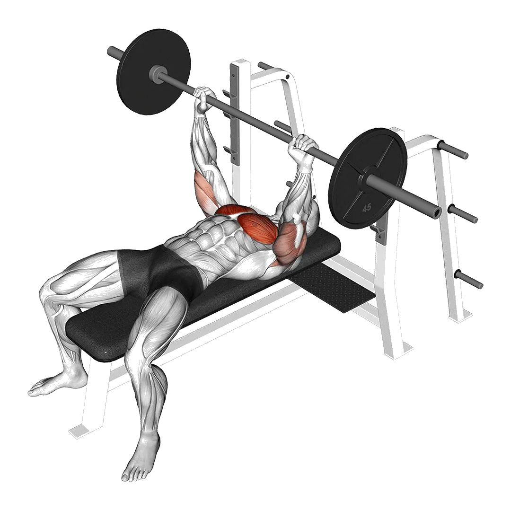

중급 평균 중량
평균적인 중급자의 기준입니다.
남성
236 lb
여성
103 lb
포즈 벤치프레스 평균 중량 [1RM]
| 레벨 | ||
|---|---|---|
| 입문 | 134 lb | 34 lb |
| 초급 | 180 lb | 63 lb |
| 중급 | 236 lb | 103 lb |
| 상급 | 299 lb | 154 lb |
| 엘리트 | 367 lb | 211 lb |
참고: 이 기준은 평균적인 리프터의 1RM을 기준으로 한 추정치입니다. 체중, 나이 등 개인 요인에 따라 달라질 수 있습니다. 자세한 데이터는 아래 표에서 확인하세요.
포즈 벤치프레스 기준 중량(lb)
남성 체중별(lb) 데이터 [1RM]
| 체중 | 입문 | 초급 | 중급 | 상급 | 엘리트 |
|---|---|---|---|---|---|
| 110 | 76 | 105 | 140 | 181 | 224 |
| 120 | 88 | 119 | 156 | 199 | 244 |
| 130 | 100 | 133 | 172 | 216 | 263 |
| 140 | 111 | 146 | 187 | 233 | 282 |
| 150 | 122 | 158 | 201 | 249 | 299 |
| 160 | 133 | 171 | 215 | 264 | 316 |
| 170 | 144 | 183 | 229 | 280 | 333 |
| 180 | 155 | 195 | 242 | 294 | 349 |
| 190 | 165 | 206 | 255 | 308 | 364 |
| 200 | 175 | 218 | 267 | 322 | 379 |
| 210 | 185 | 229 | 279 | 335 | 393 |
| 220 | 195 | 239 | 291 | 348 | 407 |
| 230 | 204 | 250 | 303 | 361 | 421 |
| 240 | 213 | 260 | 314 | 373 | 434 |
| 250 | 222 | 270 | 325 | 385 | 447 |
| 260 | 231 | 280 | 336 | 397 | 460 |
| 270 | 240 | 289 | 346 | 408 | 472 |
| 280 | 248 | 299 | 356 | 419 | 484 |
| 290 | 257 | 308 | 366 | 430 | 495 |
| 300 | 265 | 317 | 376 | 441 | 507 |
| 310 | 273 | 326 | 386 | 451 | 518 |
남성 나이별 데이터 [1RM]
| 나이 | 입문 | 초급 | 중급 | 상급 | 엘리트 |
|---|---|---|---|---|---|
| 15 | 114 | 154 | 201 | 255 | 312 |
| 20 | 131 | 176 | 230 | 292 | 357 |
| 25 | 134 | 180 | 236 | 299 | 367 |
| 30 | 134 | 180 | 236 | 299 | 367 |
| 35 | 134 | 180 | 236 | 299 | 367 |
| 40 | 134 | 180 | 236 | 299 | 367 |
| 45 | 127 | 171 | 224 | 284 | 348 |
| 50 | 119 | 161 | 210 | 267 | 327 |
| 55 | 110 | 148 | 194 | 247 | 302 |
| 60 | 101 | 136 | 177 | 225 | 276 |
| 65 | 91 | 122 | 160 | 203 | 249 |
| 70 | 82 | 110 | 144 | 182 | 224 |
| 75 | 73 | 98 | 129 | 163 | 200 |
| 80 | 65 | 88 | 115 | 146 | 179 |
| 85 | 59 | 79 | 103 | 131 | 160 |
| 90 | 53 | 71 | 93 | 118 | 144 |
여성 체중별(lb) 데이터 [1RM]
| 체중 | 입문 | 초급 | 중급 | 상급 | 엘리트 |
|---|---|---|---|---|---|
| 90 | 16 | 35 | 64 | 101 | 145 |
| 100 | 19 | 41 | 72 | 111 | 156 |
| 110 | 23 | 46 | 79 | 120 | 167 |
| 120 | 27 | 52 | 86 | 129 | 178 |
| 130 | 31 | 57 | 93 | 137 | 187 |
| 140 | 35 | 62 | 99 | 145 | 196 |
| 150 | 39 | 67 | 105 | 152 | 205 |
| 160 | 42 | 72 | 111 | 159 | 213 |
| 170 | 46 | 77 | 117 | 166 | 221 |
| 180 | 49 | 81 | 123 | 173 | 229 |
| 190 | 53 | 86 | 128 | 179 | 236 |
| 200 | 56 | 90 | 133 | 186 | 243 |
| 210 | 60 | 94 | 139 | 192 | 250 |
| 220 | 63 | 98 | 143 | 197 | 257 |
| 230 | 66 | 102 | 148 | 203 | 263 |
| 240 | 69 | 106 | 153 | 208 | 269 |
| 250 | 72 | 110 | 157 | 214 | 276 |
| 260 | 75 | 113 | 162 | 219 | 281 |
여성 나이별 데이터 [1RM]
| 나이 | 입문 | 초급 | 중급 | 상급 | 엘리트 |
|---|---|---|---|---|---|
| 15 | 29 | 54 | 88 | 131 | 179 |
| 20 | 33 | 62 | 101 | 150 | 205 |
| 25 | 34 | 63 | 103 | 154 | 211 |
| 30 | 34 | 63 | 103 | 154 | 211 |
| 35 | 34 | 63 | 103 | 154 | 211 |
| 40 | 34 | 63 | 103 | 154 | 211 |
| 45 | 32 | 60 | 98 | 146 | 200 |
| 50 | 30 | 56 | 92 | 137 | 188 |
| 55 | 28 | 52 | 85 | 127 | 174 |
| 60 | 25 | 47 | 78 | 115 | 158 |
| 65 | 23 | 43 | 70 | 104 | 143 |
| 70 | 21 | 38 | 63 | 94 | 128 |
| 75 | 18 | 34 | 56 | 84 | 115 |
| 80 | 17 | 31 | 50 | 75 | 103 |
| 85 | 15 | 28 | 45 | 67 | 92 |
| 90 | 13 | 25 | 41 | 60 | 83 |
참고: 일반적인 헬스장 바벨은 기본적으로 44lb입니다.
기록과 분석은 Shiba 앱에서
중량, 반복 횟수, 성장 변화를 한곳에서 확인할 수 있습니다.
기준표 보는 법
| 레벨 | 설명 | 분포 |
|---|---|---|
| 입문 | 올바른 자세를 익히고 1개월 이상 꾸준히 운동하는 단계입니다. | 하위 5% |
| 초급 | 6개월 이상 꾸준히 운동한 단계입니다. | 상위 80% |
| 중급 | 2년 이상 꾸준히 운동한 단계입니다. | 상위 50% |
| 상급 | 5년 이상 꾸준히 운동한 단계입니다. | 상위 20% |
| 엘리트 | 해당 운동을 5년 이상 전문적으로 훈련한 단계입니다. | 상위 5% |